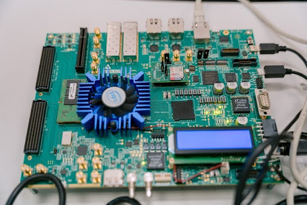
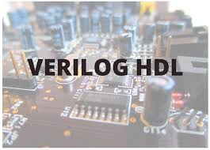
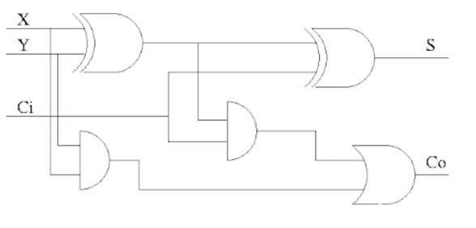
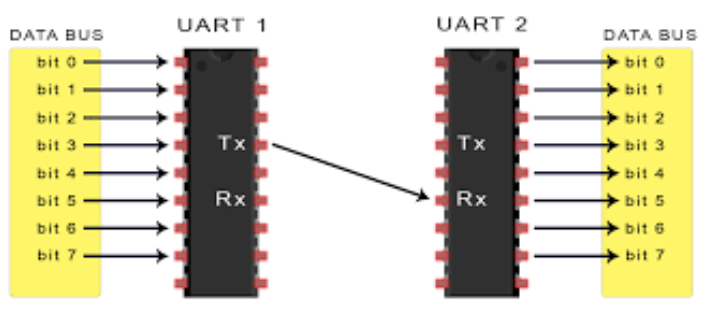
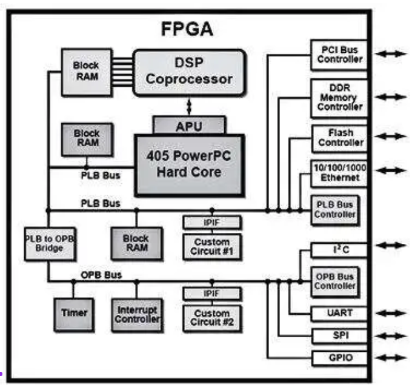

HỖ TRỢ TÂN SINH VIÊN NGÀNH BÁN DẪN (IC) – ĐH FPT
1. Trang chủ (Home)

- Giới thiệu ngắn về website
- Mục tiêu hỗ trợ tân sinh viên
- Ngành Bán dẫn là gì? (bản đơn giản)
2. Giới thiệu ngành Bán dẫn (About IC)
Ngành Bán dẫn / IC là gì?
- IC khác gì với: IT, Embedded, Điện – điện tử
- Ứng dụng của chip trong đời sống
- Vì sao nên chọn ngành IC?
3. Lộ trình học tập tại ĐH FPT
Tổng quan chương trình học
- Giai đoạn nền tảng: Toán – Vật lý – Điện tử cơ bản
- Giai đoạn chuyên ngành: Mạch số, Vi mạch, HDL
- Giai đoạn ứng dụng: FPGA, Verification, Embedded
- Giai đoạn thực tập – đồ án
Các giai đoạn


Các môn học tiêu biểu
- Digital Logic Design
- Verilog / VHDL
- Computer Architecture
- VLSI Fundamentals
- IC Verification (cơ bản)
- Embedded Systems
Những môn học "khó" & cách vượt qua
4. Kỹ năng cần chuẩn bị cho tân sinh viên
Kỹ năng chuyên môn
- Tư duy logic

- Đọc sơ đồ mạch
- Lập trình Verilog cơ bản

- Hiểu datasheet
Kỹ năng mềm
- Làm việc nhóm
- Quản lý thời gian
- Thuyết trình kỹ thuật
- Tự học
Công cụ cần biết sử dụng
- ModelSim
- Vivado
- Quartus
5. Công cụ & phần mềm cần biết
Phần mềm mô phỏng
- ModelSim / QuestaSim
- Vivado / Quartus
- LTspice / Proteus (mạch cơ bản)
Công cụ hỗ trợ học
- GitHub
- Notion
- Google Drive
- Coursera
Gợi ý laptop phù hợp học IC
6. Dự án mẫu cho sinh viên ngành IC
Dự án cơ bản
- Bộ đếm, thanh ghi, FSM
- Điều khiển đèn giao thông
- ALU 8-bit

Dự án nâng cao
- UART / SPI / I2C Controller

- CPU mini
- Hệ thống chạy trên FPGA

7. Góc chia sẻ từ sinh viên khóa trên
- Kinh nghiệm học môn khó
- Cách cân bằng học – hoạt động
- Những sai lầm tân sinh viên hay gặp
- Lời khuyên cho năm nhất
8. Cơ hội nghề nghiệp ngành Bán dẫn
Các vị trí công việc
- IC Design
- Verification
- FPGA
- Embedded
Lộ trình nghề nghiệp & kỹ năng thực tập
- Kỹ năng cần có để đi thực tập
- Doanh nghiệp bán dẫn tại Việt Nam
9. Câu hỏi thường gặp (FAQ)
- Ngành IC có khó không?
- Học IC có cần giỏi toán không?
- Có cần laptop mạnh không?
- Sinh viên năm nhất nên học gì trước?
- IC có "hot" không?
10. Tài nguyên học tập
- Website học Verilog
- Sách nhập môn IC
- Kênh YouTube kỹ thuật
- Cộng đồng học bán dẫn Việt Nam
- Coursera (Optional)
11. Liên hệ & hỗ trợ
- Email hỗ trợ sinh viên
- Form gửi câu hỏi
12. Lời khuyên cho sinh viên mới
- Học đều – đừng dồn
- Hỏi giảng viên khi chưa hiểu
- Tham gia CLB kỹ thuật
- Tự làm project nhỏ từ sớm
- IC khó, nhưng càng học càng "đã" nếu bạn theo được
13. Tip học tốt ngành IC ngay từ năm nhất
Tip 1: Nắm chắc nền tảng
- Logic số
- Toán rời rạc
- Đại số Boolean
Tip 2: Học code sớm
- Làm quen C/C++
- Sau đó là Verilog
Tip 3: Thực hành nhiều hơn lý thuyết
- Mô phỏng trên ModelSim, Vivado
- Làm mạch Arduino / FPGA nhỏ, Tinkercad
Tip 4: Đừng ngại lỗi
"Code chạy sai là chuyện bình thường của dân IC"